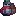

[TLM] 车万女仆 Touhou Little Maid
共 66 个条目 · touhou_little_maid
版本: 1.5.3-neoforge+mc1.21.1 · 来源: touhoulittlemaid-1.5.3-neoforge+mc1.21.1.jar
A new version of the minecraft mod inspired by the LittleMaidReengaged mod.
MC百科中文名: [TLM] 车万女仆
MC百科页面: https://www.mcmod.cn/class/1796.html（[TLM] 车万女仆 (TouhouLittleMaid)）
官方介绍 （Modrinth · 中文版由 GLM AI 翻译，仅供参考）
TouhouLittleMaid Vampirism
如果你心爱的 TouhouLittleMaid 女仆也能接受吸血鬼的黑暗馈赠，会怎么样？
本模组在 TouhouLittleMaid 与 Vampirism 之间架起桥梁，为你的女仆带来完整融合的吸血鬼体验——血液饥饿、阳光弱点和狩猎的刺激，一应俱全。
功能特性
🩸 拥抱黑夜 —— 通过感染仪式把你的女仆变成吸血鬼。看着她们在血液驱动的生存系统中逐步蜕变，为你的玩法增添真正的深度。
🍷 血即生命 —— 吸血鬼女仆只靠血液维生，拒绝普通食物。她们的血液值会随时间衰减——疏于照料，她们就会承受饥饿的后果。
🗡️ 为猎而生 —— 指派你的吸血鬼女仆去附近生物身上采血，或在饥饿来袭时让她们自主狩猎。她们深谙生存之道。
☀️ 畏惧烈日 —— 白昼是致命的。吸血鬼女仆在阳光直射下会受伤，迫使你围绕昼夜循环进行规划——除非她们已变得足够强大，足以抵御阳光。
📈 女仆等级系统（开发中）—— 吸血鬼女仆可以升到 1-5 级，不断变强，并随等级解锁抗晒能力。目前只能通过命令升级。
🔧 深度可配置 —— 几乎所有机制都可以调整。支持 Cloth Config 游戏内配置界面、Jade HUD 状态显示以及 Patchouli 内置指南书。
前置要求
| 依赖 | 版本 | 是否必需 |
|---|---|---|
| TouhouLittleMaid | 1.5.0+ | 是 |
| Vampirism | 1.10.13+ | 是 |
| Jade | any | 可选 |
| Patchouli | any | 可选 |
| Cloth Config | any | 是 |
| --- |
许可证
本项目基于 GNU Lesser General Public License v3.0 or later（SPDX：LGPL-3.0-or-later）授权。
由 GLM AI 翻译，仅供参考
查看英文原文（Modrinth）
TouhouLittleMaid Vampirism
What if your beloved TouhouLittleMaid could embrace the dark gift of vampirism?
This mod bridges TouhouLittleMaid and Vampirism, bringing a fully integrated vampire experience to your maids — complete with blood hunger, sunlight vulnerability, and the thrill of the hunt.
Features
🩸 Embrace the Night — Transform your maids into vampires through an infection ritual. Watch them evolve with a blood-driven survival system that adds real depth to your gameplay.
🍷 Blood is Life — Vampire maids sustain themselves on blood alone, rejecting ordinary food. Their blood level decays over time — neglect them, and they'll suffer the consequences of starvation.
🗡️ Born to Hunt — Assign your vampire maids to collect blood from nearby creatures, or let them hunt autonomously when hunger strikes. They know how to survive.
☀️ Fear the Sun — Daylight is deadly. Vampire maids take damage under direct sunlight, forcing you to plan around the day-night cycle — unless they've grown powerful enough to resist it.
📈 Maid Level System (In Development) — Vampire maids can progress through levels 1–5, growing stronger and unlocking sun resistance as they advance. Currently, leveling up is only available via commands.
🔧 Deeply Configurable — Nearly every mechanic is tweakable. Supports Cloth Config for an in-game GUI, Jade for HUD status display, and Patchouli for a built-in guidebook.
Requirements
| Dependency | Version | Required |
|---|---|---|
| TouhouLittleMaid | 1.5.0+ | Yes |
| Vampirism | 1.10.13+ | Yes |
| Jade | any | Optional |
| Patchouli | any | Optional |
| Cloth Config | any | Yes |
| --- |
License
This project is licensed under the GNU Lesser General Public License v3.0 or later (SPDX: LGPL-3.0-or-later).
物品与方块
touhou_little_maid:advancement_icon · 物品
 祭坛
祭坛touhou_little_maid:altar · 方块
 书架
书架touhou_little_maid:bookshelf · 方块
 魔理沙的扫帚
魔理沙的扫帚touhou_little_maid:broom · 物品?文文的相机
touhou_little_maid:camera · 物品
 中国象棋
中国象棋touhou_little_maid:cchess · 方块中国象棋残局道具
touhou_little_maid:cchess_board_state · 物品?椅子
touhou_little_maid:chair · 物品
 坐垫显示器
坐垫显示器touhou_little_maid:chair_show · 物品
 凿子
凿子touhou_little_maid:chisel · 物品
 电脑
电脑touhou_little_maid:computer · 方块
 工作台背包
工作台背包touhou_little_maid:crafting_table_backpack · 物品
 §6溺水保护饰品
§6溺水保护饰品touhou_little_maid:drown_protect_bauble · 物品
 末影箱背包
末影箱背包touhou_little_maid:ender_chest_backpack · 物品
 实体ID复制器
实体ID复制器touhou_little_maid:entity_id_copy · 物品?生成？？？
touhou_little_maid:entity_placeholder · 物品
 §6爆炸保护饰品
§6爆炸保护饰品touhou_little_maid:explosion_protect_bauble · 物品?灭火器
touhou_little_maid:extinguisher · 物品女仆妖精刷怪蛋
touhou_little_maid:fairy_spawn_egg · 物品
 §6摔落保护饰品
§6摔落保护饰品touhou_little_maid:fall_protect_bauble · 物品好感度工具
touhou_little_maid:favorability_tool_add · 物品好感度工具
touhou_little_maid:favorability_tool_full · 物品好感度工具
touhou_little_maid:favorability_tool_reduce · 物品
 胶片
胶片touhou_little_maid:film · 物品
 §6火焰保护饰品
§6火焰保护饰品touhou_little_maid:fire_protect_bauble · 物品
 熔炉背包
熔炉背包touhou_little_maid:furnace_backpack · 物品手办
touhou_little_maid:garage_kit · 方块
 五子棋
五子棋touhou_little_maid:gomoku · 方块五子棋残局道具
touhou_little_maid:gomoku_board_state · 物品?博丽的御币
touhou_little_maid:hakurei_gohei · 物品
 §6物品磁铁
§6物品磁铁touhou_little_maid:item_magnet_bauble · 物品
 河童的罗盘
河童的罗盘touhou_little_maid:kappa_compass · 物品
 电子琴
电子琴touhou_little_maid:keyboard · 方块
 §6药水保护饰品
§6药水保护饰品touhou_little_maid:magic_protect_bauble · 物品
 大背包
大背包touhou_little_maid:maid_backpack_big · 物品
 中背包
中背包touhou_little_maid:maid_backpack_middle · 物品
 小背包
小背包touhou_little_maid:maid_backpack_small · 物品
 神社庭灯
神社庭灯touhou_little_maid:maid_beacon · 方块
 女仆床
女仆床touhou_little_maid:maid_bed · 方块女仆刷怪蛋
touhou_little_maid:maid_spawn_egg · 物品
 模型切换器
模型切换器touhou_little_maid:model_switcher · 方块
 妖怪名单（移除）
妖怪名单（移除）touhou_little_maid:monster_list · 物品
 §6禁言饰品
§6禁言饰品touhou_little_maid:mute_bauble · 物品
 §6闪避布
§6闪避布touhou_little_maid:nimble_fabric · 物品主人转让工具
touhou_little_maid:owner_conversion_tool · 物品照片
touhou_little_maid:photo · 物品?野餐篮
touhou_little_maid:picnic_basket · 物品
野餐垫touhou_little_maid:picnic_mat · 方块P点
touhou_little_maid:power_point · 物品
 §6弹射物保护饰品
§6弹射物保护饰品touhou_little_maid:projectile_protect_bauble · 物品
 红狐狸卷轴
红狐狸卷轴touhou_little_maid:red_fox_scroll · 物品?风祝的御币
touhou_little_maid:sanae_gohei · 物品
 麻石狐像
麻石狐像touhou_little_maid:scarecrow · 方块
 仆人铃
仆人铃touhou_little_maid:servant_bell · 物品
 神龛
神龛touhou_little_maid:shrine · 方块?魂符
touhou_little_maid:smart_slab · 物品
零食柜touhou_little_maid:snack_cabinet · 方块雕像
touhou_little_maid:statue · 方块

替身地藏touhou_little_maid:substitute_jizo · 物品
 储罐背包
储罐背包touhou_little_maid:tank_backpack · 物品
 小号
小号touhou_little_maid:trumpet · 物品
 §6绀珠之药
§6绀珠之药touhou_little_maid:ultramarine_orb_elixir · 物品
 国际象棋
国际象棋touhou_little_maid:wchess · 方块国际象棋残局道具
touhou_little_maid:wchess_board_state · 物品
 白狐狸卷轴
白狐狸卷轴touhou_little_maid:white_fox_scroll · 物品
 §6隙间
§6隙间touhou_little_maid:wireless_io · 物品